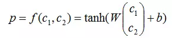

主要是依据 Yoav 17年的新书 NNM for NLP 的 18 章 的内容。
可以说是NNM for NLP的 读书笔记 ，不过自己会慢慢扩充
基础
- 1990 Pollack 提出 RecNN
- 2010 开始 流行与 NLP 领域
二者的区别
作者认为：RecNN is a generalization of the RNN from sequences to (binary) trees.
RecNN 及一些变种
base RecNN
递归神经网络按照语言的树结构来构造网络结构的，其中每个节点都可以使用向量进行表示。

其中c1和c2分别是两个子节点向量，p是父节点向量，W是权重矩阵，b是偏置向量。
这里面需要注意的是，对于树中不同的组合节点，都使用同一套参数，即W和b进行组合。(显然是不合理，因为节点的性质不同，如不同的词性、短语类型等，组合方式必然是不一样的。)
SU-RNN（Syntactically-Untied RNN）by [Socher et al. 2013a]
基于上述问题：
SU-RNN对不同类型的组合节点使用不同的组合参数，如ADJ与NN组合时，使用WADJ-NN。
但是，相同的节点类型也未必可以共享同一套组合参数，如同样是形容词，“好”和“坏”与其它词在组合时，获得的结果应该是不同的。
MV-RNN(recursive matrix-vector model) [Socher et al., 2012]
基于上述问题：
MV-RNN将不同体现在每个节点上，而非不同种类的节点上。
它认为，每个节点除了需要使用向量表示外，还需要使用一个矩阵来表示，其中向量表示节点自身的属性，而矩阵则表示其在组合时，对另一个节点的操作。
例如，“好”与“人”组合的结果是“好人”，它仍然是一种“人”，只是属性发生了一些改变，可以通过将“好”的矩阵与“人”的向量相乘获得“好人”的向量。
但是， MV-RNN对每个节点除赋予一个向量外，还需要赋予一个矩阵，使需要学习的参数过多，所以往往学习的并不充分。
RNTN（Recursive Neural Tensor Networks）[ Socher et al., 2013]
基于上述问题：
socher 提出使用张量（Tensor）来表示组合参数。
通过张量，既可以减少所需学习的参数,提示学习效果 (粒度情感分析任务上 MV-RNN44.4%的准确率，提升到45.7%)
Tree-shaped LSTMs [Tai et al., 2015, Zhu et al., 2015b]
RecNN suffer from the vanishing gradients problem of the Simple RNN。(梯度消失问题)
所以，Tai 将序列的LSTM模型扩展到树结构上。
作者自己的研究 [Kiperwasser and Goldberg, 2016a]
we propose a tree encoder that is not restricted to binary trees but instead can work with arbitrary branching trees.
RecNN 与 sequence-level RNN 对比 （树结构是否有效？）
参考 Jiwei Li 在2015年ACL上发了一篇“When Are Tree Structures Necessary for Deep Learning of Representations?”
很悲剧的发现，除语义关系分类(semantic relation classification)任务外，在其它任务中，序列模型都取得了比树结构模型更好的结果。
甚至 ：Bowman等人（2015） 研究结果甚至一定程度上证明，序列模型（LSTM）能够发现隐含的树结构
我认为：
- 树结构 相当于使用先验知识构造特征集，在小数据的情况是有效的
- 树结构天生对长程依赖的问题(或较长文本)更加合适
其他
- A SIMPLE ALTERNATIVE–LINEARIZED TREES
linearizing trees into linear sequence that is then fed into a gated RNN acceptor (or a biRNN encoder)